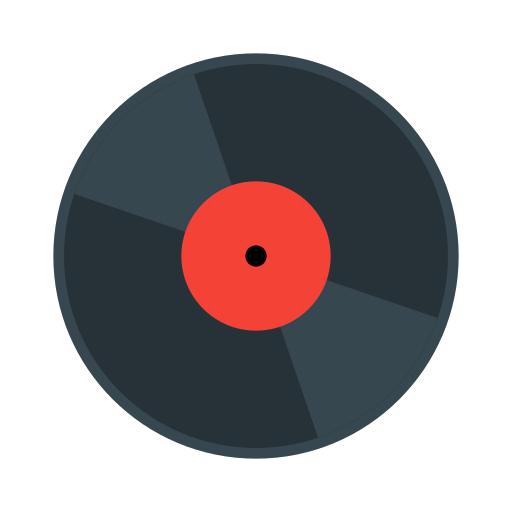

Music Library

-
Your browser does not support the audio element.
Previous
Next
{% for musicFile in site.data.music-files %} {% assign musicFileIndex = {{forloop.index}} %}
{{musicFileIndex}}
{{ musicFile.title }} - {{musicFile.artist}}
{% endfor %}